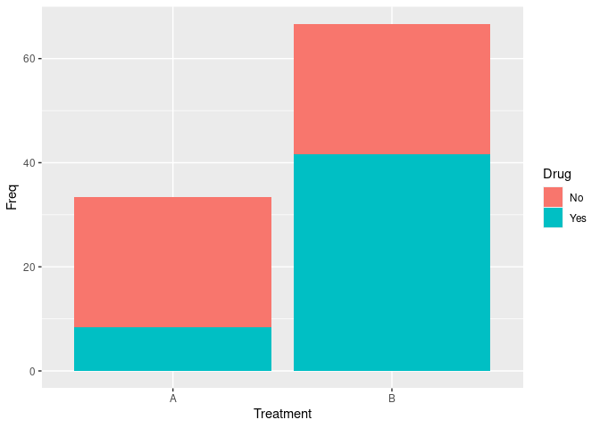
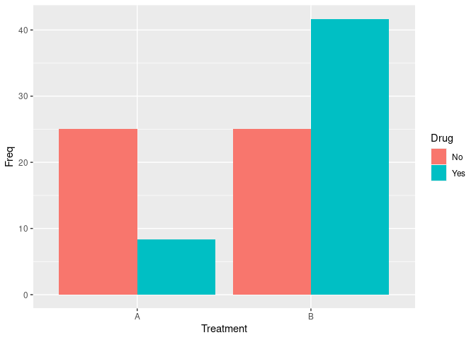

One of the requests I got was to plot unbalanced data between two groups as bar plot in ggplot as percentages. Let us do this after simulating data
set.seed(100)
df<- data.frame(
PID = 1:12,
Treatment = sample(c("A", "B"), 12, replace = TRUE) ,
Drug = sample(c("Yes", "No"), 12, replace = TRUE)
)
df
## PID Treatment Drug
## 1 1 B No
## 2 2 A No
## 3 3 B Yes
## 4 4 B No
## 5 5 A No
## 6 6 A Yes
## 7 7 B Yes
## 8 8 B Yes
## 9 9 B Yes
## 10 10 A No
## 11 11 B No
## 12 12 B Yes
Now let us create percentage table using prop.table and xtabs function.
df2=as.data.frame(100*prop.table(xtabs(~Treatment+Drug, data=df)))
df2
## Treatment Drug Freq
## 1 A No 25.000000
## 2 B No 25.000000
## 3 A Yes 8.333333
## 4 B Yes 41.666667
let us plot the data
library(ggplot2)
ggplot(df2, aes(Treatment, Freq, fill = Drug)) +
geom_bar(stat="identity")

Let us say you want to have them next to each other. Use “dodge” in geom_bar function
library(ggplot2)
ggplot(df2, aes(Treatment, Freq, fill = Drug)) +
geom_bar(stat="identity", position = "dodge")
